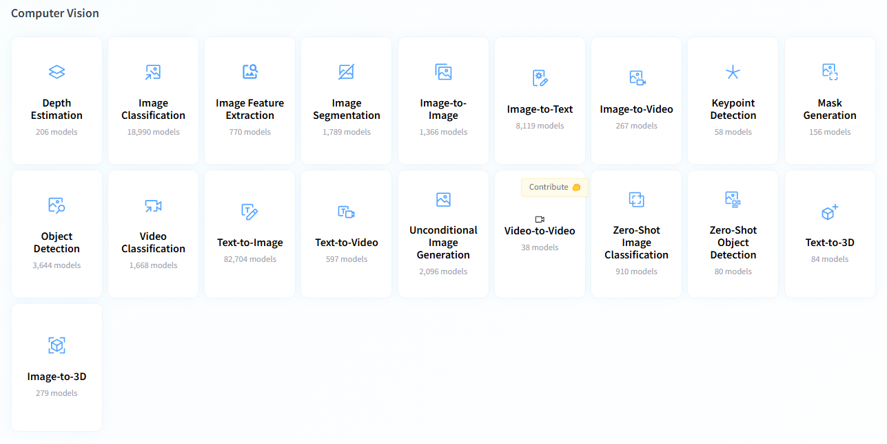

Anomaly Detection using PatchCore(1차시)
| 완료 |
📌
Computer Vision 분야
Object Detection(객체 탐지)
- 자동차, 사람, 개, 고양이 등 이미지에 포함된 명확한 형체를 찾는 경우
- YOLO, …
Image Classification(이미지 분류)
- “정상 vs 비정상”, “Pass vs Fail” 과 같이 이미지 전체에 대해 두 가지 중 하나로 판단하고자 하는 경우
- “이 사진 속 식물에 벌레가 있는가?”와 같은 이진 분류 문제
- 사진 속 위치 정보는 필요 없고, 단지 “있다/없다” 만 알고 싶을 때.
- ResNet, EfficientNet, MobileNet, …
Image Segmentation(이미지 분할)
- 찾고자 하는 대상 물체의 정확한 윤곽이나 픽셀 단위의 위치를 알고자 할 때
대표적 모델
- U-Net
- DeepLabV3+
- Mask R-CNN
Much more … (참고: https://huggingface.co/tasks)

🛠
실습 주제
Anomaly Detection(이상 탐지)
- 탐지하고자 하는 대상의 종류가 다양하거나, 비정형적인 형상을 탐지하고자 할 때
- 예: 식물 중에서 병충해에 의해 손상된 식물을 탐지하는 것.
- 정상 식물의 이미지만으로 학습
- 학습 결과로 만들어낸 정상 이미지 특성과 비교해서, 많이 다른 특성을 가진 이미지는 “비정상(anomaly)”로 판단
- 즉, 비정상 상태의 경우가 매우 다양하여 찾아내야 하는 형태를 미리 정의할 수 없는 경우
Anomaly Detection Task 접근 방식
1. 재구성 (Reconstruction-based) 방식
- Encoder-Decoder 기반 모델로 정상 이미지 학습 → 복원 오류가 큰 데이터를 이상(anomaly)으로 판단

Encoder - Decoder 구조
(그림 출처: https://medium.com/@birla.deepak26/autoencoders-76bb49ae6a8f)
- Autoencoder, VAE 등으로 정상 데이터만 학습하여 Decoder의 복원(재구성) 능력을 키움
- 검사할 입력 이미지와 학습된 Decoder에 의해 복원된 이미지 간의 차이를 기반으로 이상 여부 판단
- 재구성 방식의 문제점

Reconstruction 방식에서 의도한 시나리오와 실제 상황과의 차이 비교
(그림 출처: https://ffighting.net/deep-learning-paper-review/anomaly-detection/draem/)
- Encoder-Decoder 기반 모델로 정상 이미지 학습 → 복원 오류가 큰 데이터를 이상(anomaly)으로 판단
2. 임베딩 (Embedding) 방식
- 특성 공간(feature/embedding space)를 학습한 후, 테스트 데이터가 이 공간에서 벗어나는 정도(거리)를 기반으로 이상 탐지
- 특성 공간 추출을 위해 Pretrained network(ResNet 등)의 feature extraction block을 주로 사용
- 정상 이미지의 feature 분포와 비교하여 거리가 일정 수준 이상인 것을 이상으로 탐ㅈㅣ
- KNN, Mahalonobis 거리, cosine similarity 등
- 특성 공간을 학습하므로 복잡한 이상에도 효과적
- Pretrained model을 사용하므로, 학습 과정이 간단하거나 아예 필요 없는 경우도 있음.
3. 합성(Synthesis) 방식
- 인위적으로 정상 이미지에 이상(anomaly) 영역을 합성하여 이상 이미지 합성
- 비정상 sample이 몇 개 없더라도, 의도적으로 이상 sample을 생성하므로 지도학습을 적용하여 정확도 향상 가능
- 합성을 통해 이상 이미지를 생성하므로, 모델의 일반화 성능 향상 가능
- 실제 이상 이미지가 전혀 없을 경우, 일반화가 잘 안될 수 있음.
- AnoGAN, f-AnoGAN, CutPaste, DREAM, GLASS(2024 SOTA)….

💻
Embedding 방식의 Anomaly Detection 기법 선택
- 최근 SOTA 검토

그림 출처: paperswithcode (지금은 사이트 문 닫았음 .TT)
PatchCore
- 공식 구현:
https://github.com/amazon-science/patchcore-inspection
- 최근 SOTA 검토

{kind=link}
📢
진행 순서
- ResNet architecture 이해
- PatchCore 기반 이상 탐지의 End-to-End Overview
- Overview 내용에 대한 단계별 코드 작성
📌
ResNet architecture 이해
- ResNet (Residual Network):
- 2015년 ILSVRC(Image Large Scale Visual REcognition challenge) 대회에서 우승을 한 합성곱 신경망 모델
- 신경망이 깊어질수록 학습이 어려워지는 문제(기울기 소실 문제)를 해결하기 위해 고안된 잔차 학습(residual learning) 구조를 사용하는 합성곱 신경망(CNN)
- ResNet architecture : ResNet paper
- ResNet Variants 예시

- ResNet50

ResNet50 architecture
(원본 그림: https://www.researchgate.net/figure/Resnet50-architecture-with-convolutional-blocks-of-different-filter-sizes-and-max_fig2_368716443)
이미지에서의 잔차(Residual)란 ?
Residual= input - feature
- input : 하나의 convolution layer에서 입력으로 받는 이미지
- feature : 하나의 convolution layer에서 출력해 내는 이미지
ResNet50에서 생성된 잔차(residual)의 시각화 예시

- 실제 ResNet50 구조에서 skip connection이 있는 부분(layer1~4)
- skip connection: 이전 단계에서의 잔차(residual)를 현재 레이어의 입력으로 다시 추가해 주는 연결

- 실제 ResNet50 구조에서 skip connection이 있는 부분(layer1~4)
- ResNet (Residual Network):
💻
PatchCore End-to-End Overview
- 정상 이미지 학습


……
- 정상 이미지의 특징 맵 크기 및 시각화

- 정상 이미지 특징(1536차원 → 2차원 축소) vs Subsampled set(1536차원 → 2차원 축소)

- 정상 이미지의 이상 점수(k=3) 시각화 (shape: 28x28)

- 비정상 이미지의 이상 점수(k=3) 시각화

- 이미지별 이상 점수의 시각화(segment_map)
- segment map: 시각화를 위해 28x28의 이상 점수를 224x224 크기로 upsampling한 것(interpolation=bilinear)

- 정상 이미지 이상 점수 분포 vs 비정상 이미지 이상 점수 분포 비교

- 추론 결과 혼돈 행렬(Confusion Matrix)

- 성능 지수 산출

- 임계값에 따른 성능의 변화 관찰
- F1 score 기반 threshold 설정 후 추론 결과


- F1 score 기반 threshold 설정 후 추론 결과
- 정상 이미지 학습
🔥
단계별 코딩 및 설명

EDA(Explanatory Data Analysis) (참고: https://www.kaggle.com/code/bbonghag/mvtecad-eda-24-06-26)
- 폴더 구조 이해

- 이미지 파일 paths 생성 및 Dataset에 포함된 객체 종류 파악

- dataframe으로 dataset 메타 정보 저장

- 이미지 파일 분포 확인(train vs test, normal vs abnormal)


샘플 이미지 시각화


- 폴더 구조 이해
💻PatchCore 구현
PatchCore에서 사용하는 ResNet
- Pretrained ResNet50 (ImageNet)
- Use only mid level layers


From scratch
- 프레임워크: Pytorch
- Backbone (feature extractor): Pretrained ResNet50
- Feature Extractor로 사용될 부분: ResNet50.layer2[-1] & ResNet50.layer3[-1]

ResNet50에서 Feature map을 생성하는 부분과 그 중에서 PatchCore가 Pretrained Encoder로 사용하는 부분(빨간색 사각형 표시)
- Coreset Subsampling 기법 도입
핵심 코드 (참고: https://www.kaggle.com/code/akshaysom/anomaly-detection-using-patchcore-from-scratch)
# 특징 추출 모델 class 구현 #class patchcore_feature_extractor(nn.Module) class patchcore_feature_extractor(nn.Module): def __init__(self, patch_size=3, stride=1, verbose=False): super(patchcore_feature_extractor, self).__init__() # 부모 클래스인 nn.Module을 상속 받기 위한 초기화 self.patch_size = patch_size self.stride = stride self.verbose = verbose self.features = None self.model = resnet50(weights=ResNet50_Weights.IMAGENET1K_V1) self.model.eval() # 모델이 학습하지 않도록 동결(freeze) for param in self.model.parameters(): param.requires_grad = False def hook(module, input, feature_map): self.features.append(feature_map) if (self.verbose): print(f"=> feature_map.shape: {feature_map.shape}") # resnet50 모델의 "layer2" group과 "layer3" group의 마지막 layer에 대한 forward 계산이 끝났을 때 위에서 정의해 둔 "hook" 함수가 호출되도록 설정 self.model.layer2[-1].register_forward_hook(hook) self.model.layer3[-1].register_forward_hook(hook) def forward(self, x, verbose=False): self.verbose = verbose self.features = [] x = x.to(device) with torch.no_grad(): # feature extraction _ = self.model(x) # forward 계산 수행 시, register_forward_hook()에 의해서 self.features에 자동으로 추출된 feature가 저장되므로 반환값 받을 필요 없음. # locally aware patch feature 생성 self.avgpool = torch.nn.AvgPool2d(kernel_size=self.patch_size, stride=self.stride) fmap_size = self.features[0].shape[-2] # (28, 28) # 최종 출력되는 feature map의 크기가 fmap_size=(28,28)이 되도록 하는 adaptive pooler 생성 self.adaptive_avg_pool = torch.nn.AdaptiveAvgPool2d(fmap_size) ### shape 변화 추적용 출력 if verbose: for i, ft_map in enumerate(self.features): avg_pooled_ft_map = self.avgpool(ft_map) adaptive_avg_pooled_ft_map = self.adaptive_avg_pool(avg_pooled_ft_map) print(f"\n[{i}] ft_map.shape : {ft_map.shape}") print(f"[{i}] avg_pooled_ft_map.shape : {avg_pooled_ft_map.shape}") print(f"[{i}] adaptive_avg_pooled_ft_map.shape: {adaptive_avg_pooled_ft_map.shape}") print("-"*80) print("="*100) ### # feature map을 average pooling하고 크기 조정 => resized_maps: [1,512,28,28], [1,1024,28,28] resized_map = [self.adaptive_avg_pool(self.avgpool(fmap)) for fmap in self.features] patchcore_features = torch.cat(resized_map, dim=1) # # feature map들을 C차원에서 합치기 => [1, 512, 28, 28]+[1, 1024, 28, 28]=[1, 1536, 28, 28] patchcore_features = patchcore_features.reshape(patchcore_features.shape[1], -1).T # [1536, 28, 28] => [1536, 28x28] => [28*28, 1536] = [784, 1536] return patchcore_features
✅이진분류 문제 성능평가
균형 데이터 또는 특정 관점을 강조하는 지표
- 정밀도(Precision)
- 재현율(Recall)
- 정확도(Accuracy)
- 조화평균(F1 score)
- AUC-ROC: ROC 커브 아래의 면적: 값이 0.5에 가까울수록 모델의 성능이 무작위 수준에 가깝다는 의미. 1에 가까워야 우수한 모델로 해석
- ROC curve(Receiver Operating Characteristic cuver): 이진 분류 모델의 성능을 시각화하는 기법

- ROC curve(Receiver Operating Characteristic cuver): 이진 분류 모델의 성능을 시각화하는 기법
불균형 데이터에도 견고한 평가 지표
- MCC(Matthews Correlation Coefficients)

- AUPRC(Area Under the Precision-Recall Curve)
- fpr과 tpr를 각 축으로 하는 ROC 커브와 달리 Precision과 Recall을 각 축으로 하는 커브 아래의 면적

- fpr과 tpr를 각 축으로 하는 ROC 커브와 달리 Precision과 Recall을 각 축으로 하는 커브 아래의 면적
- MCC(Matthews Correlation Coefficients)